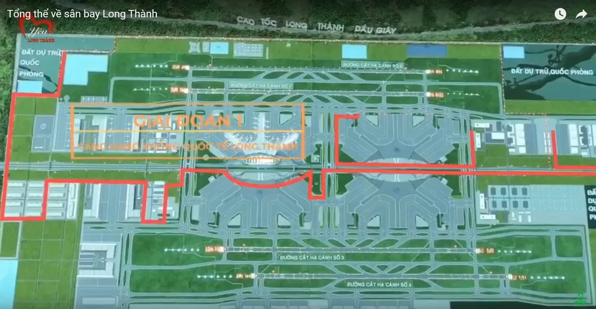
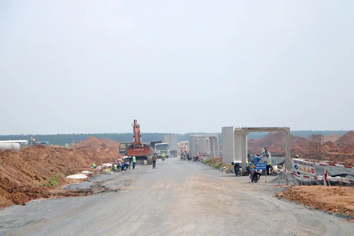
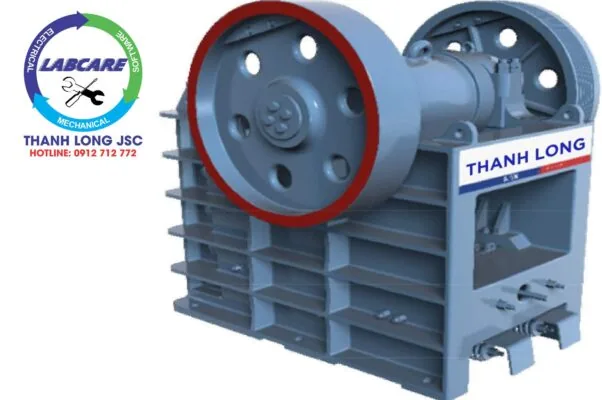
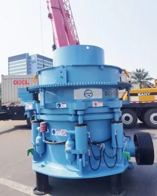
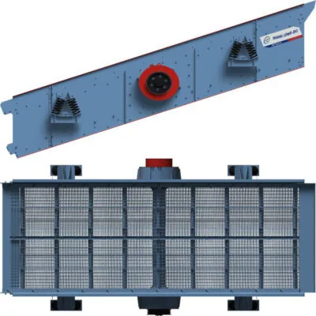
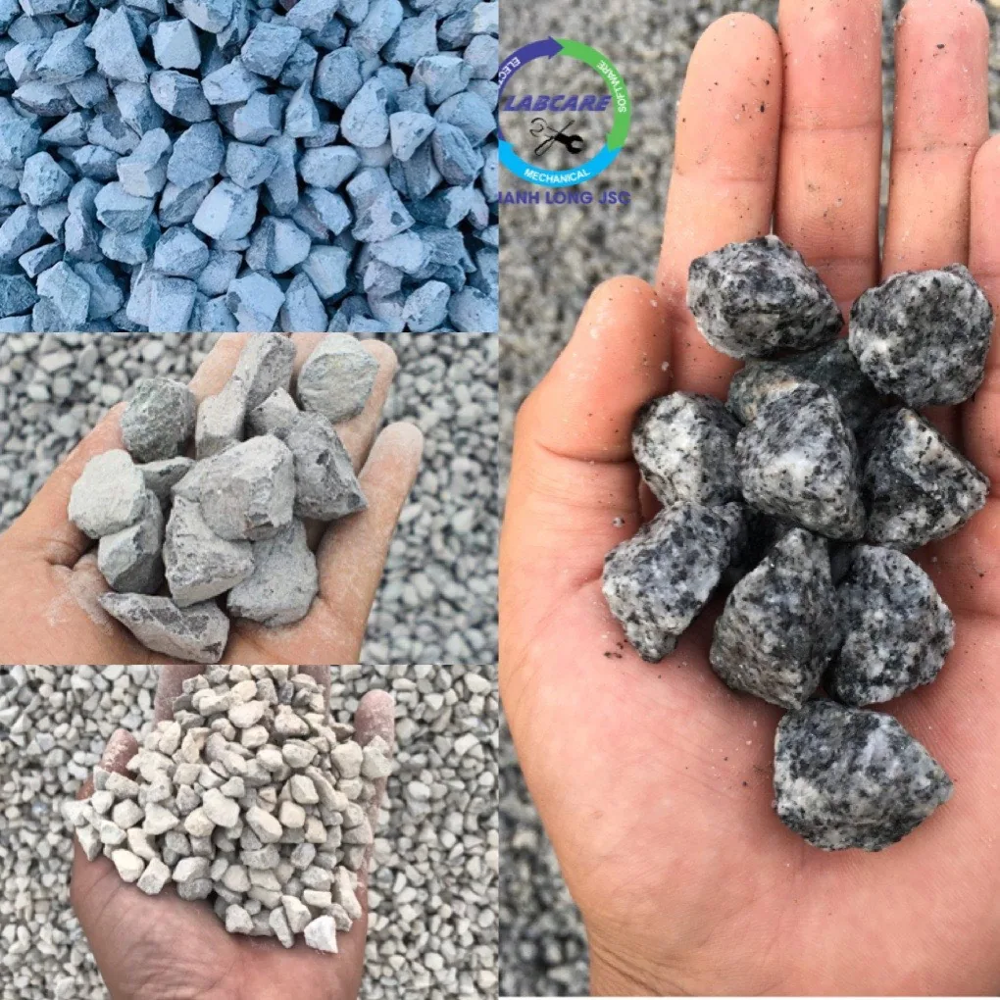
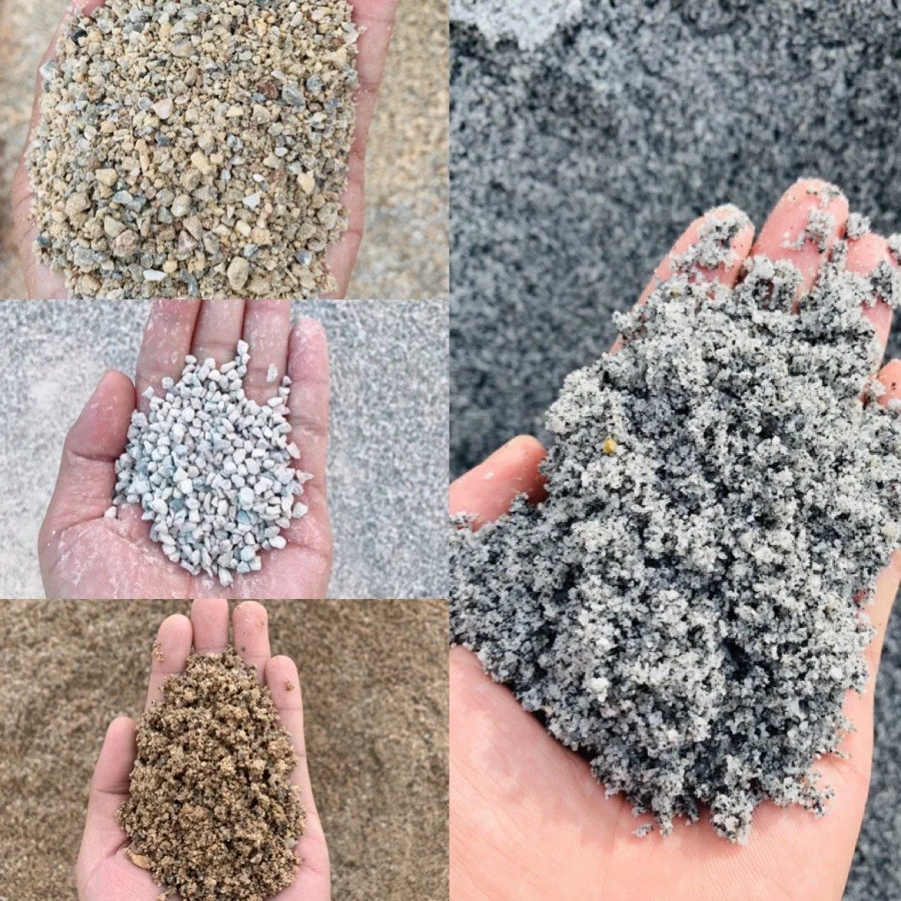

Ngay sau khi Chính phủ phê duyệt đầu tư sân bay Long Thành giai đoạn 1, ông Lại Xuân Thanh khẳng định:. Đơn vị triển khai ngay các bước tiếp theo thực hiện quyết định đầu tư, các dự án thành phần theo quy định của pháp luật. Bảo đảm chất lượng, tiến độ thực hiện và hiệu quả đầu tư. Kiểm soát chặt chẽ tiêu chuẩn dây chuyền nghiền đá cát, khi xây dựng dự án sân bay Long Thành theo đúng mức cao nhất tiêu chuẩn ICAO.
“Hiện nay, có 22 tổ chức đã ký thỏa thuận bảo mật thông tin để trao đổi về dự án. Trong đó 12 tổ chức đã ký biên bản ghi nhớ, về mong muốn tài trợ cho dự án với tổng giá trị đề xuất hơn 143 nghìn tỷ đồng. Nhiều hơn nhu cầ. Chủ tịch ACV Lại Xuân Thanh nhấn mạnh.
Các điểm lưu ý Tiêu chuẩn dây chuyền nghiền đá khi tiến hành xây dựng dự án sân bay Long Thành.
1/ Tải trọng:
Với sân bay, do việc vận tải hàng không không có biên giới. Hệ thống sân – đường của sân bay phải tuân thủ các quy định, của tổ chức Hàng không dân dụng quốc tế (ICAO). Tải trọng trên một càng bánh máy bay có thể lớn hõn 900kN (máy bay Boeing 757-400). Với áp lực hõi trong bánh 1,25MPa (có thể lên đến 1,5 hoặc 1,6 MPa).
Trên sân bay thì tốc độ lại phụ thuộc vào bộ phận sân đường. Tốc độ nhỏ và không đổi trên đường lãn, tốc độ thay đổi liên tục trên đường băng. Và hoàn toàn không phụ thuộc và, tầm quan trọng của cảng hàng không hoặc của nước sở tại. Máy bay phải chạy bon cất cánh với tốc độ như nhau ờ Nội Bài, ở Bangkok hoặc ở Paris.
Do tải trọng thẳng đứng của bánh máy bay rất lớn, nên chiều dày mặt đường sân bay thường lớn hơn nhiều so với chiều dày mặt đường ô tô. Vì vật thi công lớp dính bám, trong kết cấu mặt đường mềm sân bay không tốt. Thì thường xuất hiện sự trượt của lớp mặt trên lớp móng, tại các khu vực có bố trí siêu cao và các đoạn đường hãm phanh.
2/ Tác động của môi trường
Tác dụng của môi trường (nhiệt độ, nước mưa…), thường gây các hậu quá bất lợi đối với mặt đường sân bay. Với kết cấu mặt đường mềm, cùng với thời gian nhựa bitum trong mặt đường bị hoá già. Sẽ xuất hiện các đường nứt nhô trên lớp mặt.
Do tần suất tác dụng của bánh máy bay thấp hõn, nên các bánh máy bay không hàn kín được các đường nứt. Vì vậy, khi thiết kế công thức bê tông nhựa của mặt đường sân bay, nên tãng hàm lượng nhựa bi tum lên một ít để đảm bảo độ kín nước của mặt đường.
Mặt khác, do mặt đường sân bay rộng, khoảng cách thoát nước xa. Thời gian thoát nước lâu khiến cho tính không thấm nước, trở thành một chỉ tiêu cõ bàn khi thiết kế mặt đường sân bay. Đây là điểm mấu chốt để bảo đảm chất lượng mặt đường.
Từ đó phải nghiên cứu một công thức riêng cho bê tông nhựa mặt đường sân bay, bảo đảm cho hỗn hợp nhựa có độ chặt và độ dễ thi công cao.
3/ Phương pháp thiết kế
Phương pháp thiết kế chiều dày mặt đường mềm của đường ô tô và của sân bay (theo ICAO ) cũng khác nhau.
Chiều dày mặt đường mền đường ô tô được tính theo hai tiêu chuẩn: a) không cho phép xuất hiện biến dạng dư trong đất nền b) không cho phép xuất hiện đường nứt do mỏi trong thớ dưới của từng lớp mặt đường. Chiết dày mặt đường được tính với tiệt chuẩn bất lợi nhất.
Việc thiết kế chiều dày mặt đường sân bay thì chỉ tính theo tiêu chuẩn đầu tiên (tiêu chuẩn a (xem Thiết kế sân bay, phần 3: Mặt đường, ICAO ). Cãn cứ vào tí số CBR của đất nền và tải trọng càng bánh của máy bay thiết kế để xác định chiều dày tưõng đưõng tổng cộng của kết cấu mặt đường. Sau đó chọn một kết cấu mặt đường cụ thể với các lớp vật liệu thích hợp có chiều dày tưõng đưõng bằng chiều dày đã xác định ở trên.

Các yêu cầu chất lượng Tiêu chuẩn dây chuyền nghiền đá cát đối với mặt đường sân bay
1/ Yêu cầu về chất lượng đối với lớp mặt của mặt đường mêm sân bay.
Lớp mặt của mặt đường mềm sân bay phải bảo đảm được các chức nãng sau:
– Bảo đảm cho máy bay lãn bánh an toàn và thuận lợi. Chức năng này đòi hỏi, lớp mặt phải bảo đảm được các yêu cầu về cường độ. Và độ ổn định dưới tác dụng của tải trọng, cũng như phải thoả mãn các yêu cầu về độ nhám và độ bằng phảng.
– Bảo vệ nền móng dưới tác dụng của nước. Yêu cầu này đòi hỏi lớp mặt phải không thấm nước, và phải có một chiều dày tối thiểu. bảo đảm không xuất hiện đường nứt, dưới tác dụng của tải trọng hoặc do sự truyền nứt từ lớp móng cứng.
– Bảo đảm các tính chất trên đây phải được duy trì lâu dài. Điều này đòi hỏi nhựa bi tum phải lâu bị hóa già.
2/ Yêu cầu và cường độ, chống hình thành vệt lún bánh xe và mỏi.
Do tần suất tác dụng của máy bay tại một chỗ nhỏ hơn nhiều, so với đường ô tô nên yêu cầu đối với chỉ tiêu này không khắt khe như:. Với mặt đường ô tô. Tuy nhiên, mặt đường sân bay chịu tải trọng lớn hơn, nên phải sử dụng hỗn hợp bê tông nhựa có độ dãn dài. Khi phá hoại cao hơn, so với bê tông nhựa của đường ô tô. Cần chú ý chống lún, vệt bánh xe trên đường lãn.
3/ Độ nhám.
Do số lần hạ cánh của sân bay không lớn, nên yêu cầu đối với độ nhám không cao như đối với mặt đường ô tô. Vì bánh máy bay ít làm hao mòn và trơn nhẵn cốt liệu.
Độ nhám (độ bám giữa bánh máy bay và mặt đường) của mặt đường khô, và sạch thường là phù hợp với yêu cầu. Tuy nhiên khi mặt đường bị ướt thì thường không đủ độ nhám, và mặt đường trở nên trơn trượt. Vì vậy khi xây dựng và khai thác mặt đường sân bay, cần đặc biệt chú ư đến độ nhám khi mặt đường ẩm ướt.
Để vận hành an toàn, mặt đường sân bay phải đủ độ bám để hãm phanh khi máy bay hạ cánh. Hoặc hãm phanh trong trường hợp việc cất cánh bị gián đoạn vì lý do kỹ thuật, và để quay bánh khi máy bay tiếp đất lúc hạ cánh.
Để đạt được độ nhám vĩ mô, với mặt đường mềm nên dùng bê- tông nhựa vữa đá dãm 0/14 hoặc 0/10mm. Với mặt đường bê tông xi măng thì, phải xẻ rãnh tạo nhám. Ở mặt đường sân bay vai trò của độ nhám vi mô không rõ ràng. Trên các đường bãng sân bay cấp 4e, 4d, 4c cho phép dùng cốt liệu đá vôi có độ cứng lớn để chế tạo bê tông nhựa.
Để nghiệm thu mặt đường, và kiểm tra độ bám phải tiến hành các thí nghiệm kiểm tra sau:
– Kiểm tra khe hở giữa thước dài 3m, theo hướng dọc và hưởng ngang. Yêu cầu khe hở phải <3mm để mặt đường không đọng nước.
– Kiểm tra lực bám bằng máy đo hệ số ma sát dọc. Yêu cầu hệ số ma sát dọc dưới một màng nước 1mm phải lớn hõn 0,65 ở tốc độ 65km/h. Và lớn hơn 0,44 ở tốc độ 100km/h.
– Kiểm tra độ nhám bằng thí nghiệm đo chiều cao cát (22 TCN 65 – 84). Theo ICAO, chiều cao cát 1mm là thoả mãn.
4/ Tính không thấm nước.
Nước làm giảm sức chịu tải của kết cấu mặt đường. Do điều kiện thoát nước của mặt đường sân bay khó khãn hõn so với mặt đường tô (khoảng cách thoát nước xa, thời gian thoát nước mặt trên đường bãng lâu) làm cho tính không thấm nước trở thành một yêu cầu chính đổi với mặt đường sân bay. đây là điểm ưu tiên để bảo đảm chất lượng. Muốn vậy, hỗn hợp bê tông nhựa phải có độ chặt và độ dễ thi công cao.
5/ Độ bằng phẳng.
Theo khuyến nghị của ICAO (điều 3.1 .24, phụ lục 14) thì “Bề mặt đường bãng không được gồ ghề làm giảm hiệu quả của việc hãm phanh hoặc có hại cho việc cất – hạ cánh của máy bay”.
Do tốc độ lãn bánh của may bay lúc cất cánh hoặc hạ cánh rất cao (ví dụ với máy bay Boeing 747, Airbus tốc độ gần đúng khi cất cánh ở cao trình mặt biển là 250 – 280km/h), nên yêu cầu về độ bằng phẳng của đường bãng cao hõn nhiều so với đường ô tô, ảnh hưởng của độ bằng phẳng đến sự an toàn của máy bay quan trọng hõn nhiều so với đường ô tô mà tốc độ chạy xe thấp hõn và có thể hạn chế.
Phụ lục 14 ICAO qui định khe hô dưới thước dài 3m là -3mm để thoát nhanh nước mặt, tránh tạo thành các vũng nước, và độ dốc dọc không được thay đổi quá 2% trên 30m dài.
Trên đường lãn, do tốc độ lãn bánh của máy bay thấp hõn (20- 60km/h)nên yêu cầu về độ bằng phẳng chỉ xấp xỉ với độ bằng phẳng của đường ô tô.
6/ Bảo đảm sự toàn vẹn của lớp mặt
Dưới tác dụng của máy bay ứng suất do tải trọng gây ra, nhiên liệu rõi vãi, sự phụt của động cõ phản lực) và của môi rường khí hậu (sự hoá già), mặt đường có thể bị phá hoại dưới các hình thức:
– Nứt và rạn vở làm cho mặt lượng bị thấm nước.
– Biến dạng (lún, sệ, vệt bánh, mặt cắt chữ W).

Phân loại mặt đường Mặt đường sân bay được phân loại theo nhiều tiêu chí. Theo tuổi thọ và mức độ hoàn thiện, mặt đường sân bay được chia thành:
– Cấp cao (mặt đường cứng và bê tông nhựa (BTN);
– Cấp thấp (mặt đường mềm, ngoại trừ BTN). 5.4.2 Theo tính chất chịu tải, mặt đường sân bay được chia thành:
– Mặt đường cứng gồm có:. Bê tông xi măng (BTXM), bê tông xi măng lưới thép (BTXMLT). Bê tông xi măng cốt thép (BTXMCT), bê tông xi măng cốt thép ứng suất trước(BTXMCTƯST). Cũng như BTN (BT asphalt) trên mặt đường BTXM.
– Mặt đường mềm gồm có:. Mặt đường BTN polime, mặt đường BTN. Mặt đường đá cấp phối chặt thấm nhập nhựa, mặt đường đá dăm. Đá cuội, đất và vật liệu tại chỗ gia cố chất kết dính hữu cơ hoặc vô cơ. Mặt đường BTXMCT là loại mặt đường BTXM có bố trí hai lớp cốt thép, có tiết diện được tính theo độ bền và bề rộng mở rộng vết nứt. Tỷ lệ cốt thép trên tiết diện tấm theo tính toán, lớn hơn 0,25%. 5.4.4
Mặt đường BTXMLT còn gọi là mặt đường bê tông ít thép, là loại mặt đường BTXM có một lớp lưới thép. Nhằm chịu ứng suất nhiệt cho bê tông, với tỷ lệ cốt thép. Trên diện tích tiết diện tấm tính toán không lớn hơn 0,25%. Lưới thép đặt cách mặt trên bê tông, một khoảng cách bằng 1/3 đến 1/2 chiều dày tấm.
Ưu điểm Tiêu chuẩn dây chuyền nghiền đá cát khi xây dựng dự án sân bay Long Thành, tiết kiệm, chính hãng, đúng giá gốc, hiệu quả từ SRH
- Chi phí đầu tư hợp lý, hu hồi vốn nhanh, dễ dàng sử dụng, lợi nhuận cao.
- Sản xuất với trữ lượng vật liệu nghiền lớn, độ cứng cao, không bị dừng máy.
- Tiết kiệm điện năng tiêu thụ gấp 2 lần.
- Đồng bộ các máy trong dây chuyền tạo ra hiệu suất làm việc cao nhất. Dễ dàng theo dõi hoạt động và điều khiển qua bộ xử lý thông minh IC.
- Các linh kiện đi kèm đa dạng, dễ dàng bảo dưỡng hoặc sửa chữa. Với đội ngũ kỹ sư giàu kinh nghiệm, tay nghề cao được đào tạo trong và ngoài nước sẽ có mặt tại hiện trường khi có sự cố.
- Kho vật tư thay thế có sẵn tại Việt Nam, kỹ sư và chuyên gia hỗ trợ lắp đặt, chăm sóc trước và trong quá trình vận hành.
- Hỗ trợ tính năng chẩn đoán qua hình ảnh, video call ngay tại mỏ, khắc phục lập tức sự cố, bảo đảm quá trình sản xuất liên tục.
Các thiết bị chính của Tiêu chuẩn dây chuyền nghiền đá cát SV của SRH
Máy kẹp hàm

Máy nghiền hàm là sự lựa chọn hoàn hảo cho việc nghiền kích thước đá lớn. Với việc cải tiến cửa đầu vào của máy kẹp hàm, sâu hơn 1000 mm (40”). Có thể xử lý vật liệu thô hơn, làm giảm chi phí đáng kể cho nhu cầu nổ mìn và búa đục.
Cấu trúc bắt bulong, có tính cách mạng có nghĩa là:. Máy nghiền hàm có thể dễ dàng tháo rời và vận chuyển sang các mỏ khác, 1 cách dễ dàng và tiết kiệm chi phí. Điều đặc biệt là kết cấu bulong, có thể khử ứng suất tốt hơn. Giảm va chấn và phát sinh lực bên trong miệng hàm, làm quá trình sử dụng bền bỉ và hiệu quả nhất.
Máy nghiền côn SCH – SHR

Máy nghiền côn – là máy nghiền côn được ứng cho đá cứng và dai. Có sự kết hợp độc đáo giữa tốc độ quay của trục lệch tâm, lực văng. Lực nghiền và thiết kế buồng nghiền. Thiết kế buồng nghiền hợp lý, được chứng minh tại thực tế là có công suất cao hơn. Và chất lượng sản phẩm cuối tuyệt vời trong tất cả các ứng dụng nghiền thứ cấp, nghiền ba giai đoạn và nghiền bốn giai đoạn.
Để đảm bảo an toàn tối đa cho các công nhân vận hành, máy nghiền côn được thiết kế để bảo trì dễ dàng. Bạn có thể truy cập vào các thành phần chính dễ dàng từ phía trên của máy nghiền côn.
Sàng rung

- Dòng trục được làm bằng Máy rung mô-đun độc đáo của SRH. Được gắn mặt bích vào các vách sàng, được đồng bộ hóa bởi trục cardan.
- Trọng lượng sàng luôn nhẹ hơn, tiết kiện sắt xi chân đế.
- Động cơ nhỏ hơn so với Model cùng loại và cùng công suất, tiệt kiệm điện trong quá trinh sản xuất.
- Mỗi máy rung mô-đun SRH bao gồm hai vòng bi mang lại tuổi thọ vòng bi rất dài. Hiện nay, đây là loại sàng tiên tiến số 1 thế giới, về tỷ lệ lọt sàng, biên độ rung.
- Các thanh chéo nối 2 vách sàng của SRH cũng được bắt ốc. Chứ không hàn chết 1 điểm nhằm làm giảm ứng suất, tăng tuổi thọ của sàng.
- Sàng rung CVB có thể được trang bị một tấm lưới lớn, đan lại bằng thép (chất liệu thép có khả năng chống ma sát ăn mòn, rất bền). Hoặc kết cấu bằng cao su, PE, … Tùy vào nhu cầu và ứng dụng của khách hàng.
- Khi đưa vào hoạt động, máy sẽ tiến hành rung theo hệ thống điều khiển. Trục văng và tâm quả văng sẽ rung lệch trên lò lo. Để khiến cho những nguyên liệu đá bên trên dần dần lọt xuống các mắt lưới, hoặc lỗ của máy. Loại nguyên liệu kích thước lớn bị giữ lại ở bên trên, loại kích thước nhỏ thì lọt xuống phía dưới. Từ đó phân loại được rất dễ dàng.
Máy nghiền cát nhân tạo SV của SRH

- Cấu trúc đơn giản, dễ lắp đặt, bảo dưỡng thuận tiện và chi phí vận hành thấp.
- Dầu nhẹ được sử dụng cho hệ thống tuần hoàn bôi trơn, đảm bảo máy luôn mát.
- Lắp đặt toàn bộ hệ thống bảo vệ tự động hoá mới, hệ thống cảnh báo chấn động. Dầu lọc máy, hệ thống báo động nhiệt độ ổ đỡ…
- Sử dụng thép chống mài mòn, tuổi thọ được nâng cao 40%, giảm giá thành vận hành xuống 40% so với các hệ máy khác.
- Hoạt động theo nguyên lý đá va đá Tốc độ rotor được điều khiển tự động có thể thay đổi được( từ 50-85m/s )-> có thể điều chỉnh tỷ lệ cát đầu ra đến 50%-70% tuỳ loại đá. . ., sản phẩm tạo ra sẻ có Module hạt đồng đều, ít hạt mịn. Tốc độ rotor từ 1500-2500 vòng/phút tỷ lệ cát cao hơn khi vòng quay rotor lớn.
- Tiết kiệm dao nghiền cát, với 35.000-40.000 khối cát/ 1 bộ dao. Đây là sản phẩm bán ưu việt nhất trên thị trường.
- Hệ thống điều khiển hoàn toàn tự động IC giúp tối ưu hiệu suât đầu ra, đồng thời tối thiểu điện năng tiêu thụ=> Không phụ thuộc vào trình độ và kinh nghiệm của người vận hành.
- Sử dụng động cơ 110kW-150KW=> tiết kiệm điện năng tiêu thụ hàng năm. Với sự cố nhỏ, hệ thống thủy lực tự nâng hạ và cảnh báo, sửa chữa rất chóng.
- Đội kỹ sư và chuyên gia, sẵn sàng hỗ trợ khách hàng 24/24. Lắp đặt, vận hành, bảo trì, khắc phục sự cố.
Máy rửa cát / Máy tách nước McLanahan
- Hệ thống được bảo vệ khỏi vật liệu đầu vào quá cỡ bởi lưới nghiêng hoặc lưới nghiêng thủy lực.
- Nguồn nguyên liệu vào phễu chứa được trộn tự do với nước.
- Sàng rung phân loại vật liệu thành các thành phần đá và cát.
- Cửa trộn bên trong phễu thu liệu của sàng, cho phép các sản phẩm đá kết hợp lại với nhau tùy theo yêu cầu khách hàng.
- Tính năng phối trộn thành phần hạt cát bằng cách tăng hoặc giảm thành phần cát mịn. Dễ dàng cho các ứng dụng cần thiết cho việc tạo module cỡ hạt cát.
- Cát và nước bùn được bơm từ bể chứa qua hai Hydrocyclones.
- Việc tái sử dụng nước tràn sẽ tối ưu lượng nước sạch cần cho việc rửa cát.
- Sản phẩm đầu ra từ dòng chảy bên dưới được xả vào một sàng tách nước.
- Sản phẩm chính cuối cùng được trộn giữa hai loại cát được lọc ra ngoài sàng tách nước.
- Phễu cấp liệu dạng băng tải gấp
- Tính năng cửa thăm của bể chứa giúp dễ dàng bảo dưỡng.
- Hệ thống Eze-Riser giúp nâng và khóa ống ở trên cao để dễ dàng tiếp cận với ống bơm.
Các sản phẩm từ tiêu chuẩn dây chuyền nghiền đá cát SRH


Công ty nào cung cấp công nghệ tiêu chuẩn dây chuyền nghiền đá cát tốt nhất hiện nay?
Trên thị trường Việt có rất nhiều đơn vị sản xuất thiết bị trong dây chuyền máy nghiền đá và cát nhân tạo nhưng đa phần ở quy mô hộ gia đình. Sản phẩm chế tạo trên cơ sở kinh nghiệm, dẫn đến sản phẩm hoàn thiện ra thị trường tính có tính ổn định không cao. Tuy nhiên để hiểu rõ hơn về nguyên lý, cấu tạo của các loại máy xay đá xây dựng các chủ đầu tư có thể tìm hiểu một số đơn vị có kinh nghiệm lâu năm trên thị trường cung cấp dây chuyền máy nghiền đá đạt chuẩn xây dựng.
Có thể kể đến các nhà sản xuất đến từ Châu Âu, Mỹ, Trung Quốc,… Mỗi hãng có những ưu nhược điểm khác nhau. Tùy thuộc vào nhu cầu và khả năng tài chính của chủ đầu tư khi chọn tiêu chuẩn dây chuyền nghiền đá cát.
Vì sao phải chọn tiêu chuẩn dây chuyền nghiền đá cát của SRH
SRH tự tin là một trong những nhà sản xuất ứng dụng triệt để công nghệ tiên tiến trong sản xuất, quản lý, sử dụng vào lĩnh vực khai thác, sản xuất cốt liệu. Được biết đến là dây chuyền máy nghiền đá xây dựng với những ưu điểm như:
- ✅ Thời gian giúp chủ đầu tư thu hồi vốn nhanh
- ✅ Dây chuyền nghiền đá xây dựng tiết kiệm điện,
- ✅ Dây chuyền nghiền đá xây dựng không tiêu hao vật tư
- ✅ Thời gian hoạt động bền bỉ, không dừng máy
- ✅ Lợi nhuận thu được nhiều nhất trên 1 khối sản phẩm đầu ra.
Từ những tiêu chí trên, chủ đầu tư có thể hiểu rõ hơn lý do vì sao các mỏ đá tại các khu vực như:. Đồng Nai, Bình Dương. Bình Phước, Bà Rịa – Vũng Tàu. Bình Thuận, Ninh Thuận. Cao Bằng, Lạng Sơn, … Đang có xu hướng chuyển đổi công nghệ từ dây chuyền nghiền đá xây dựng cũ sang công nghệ mới.
Để được biết thêm thông tin chi tiết về các loại dây chuyền nghiền đá từ thủ công đến chuyên nghiệp, hãy liên hệ tới hotline: 0912 712 772 để được tư vấn giải pháp đầu tư tiết kiệm, hiệu quả nhất và báo giá miễn phí.